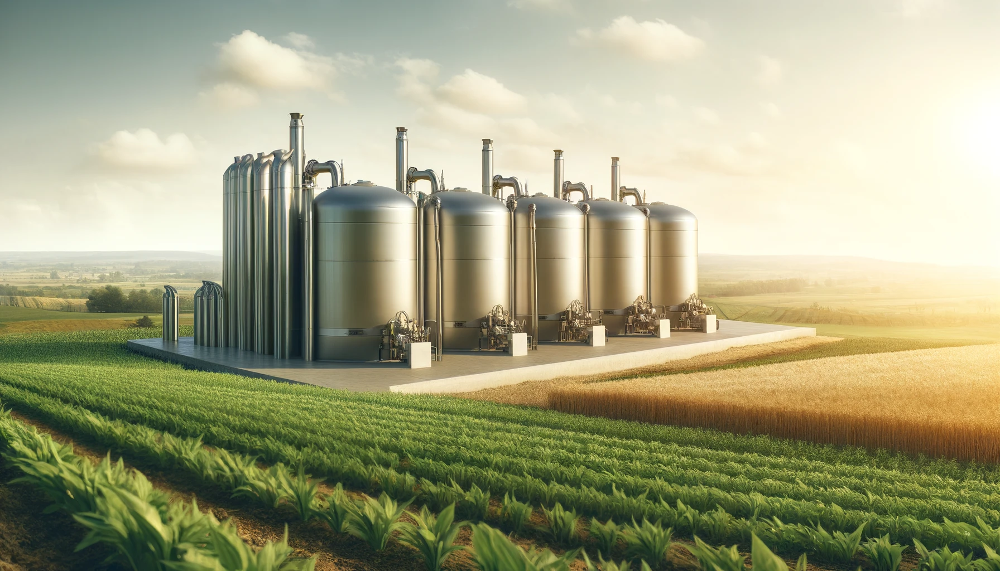
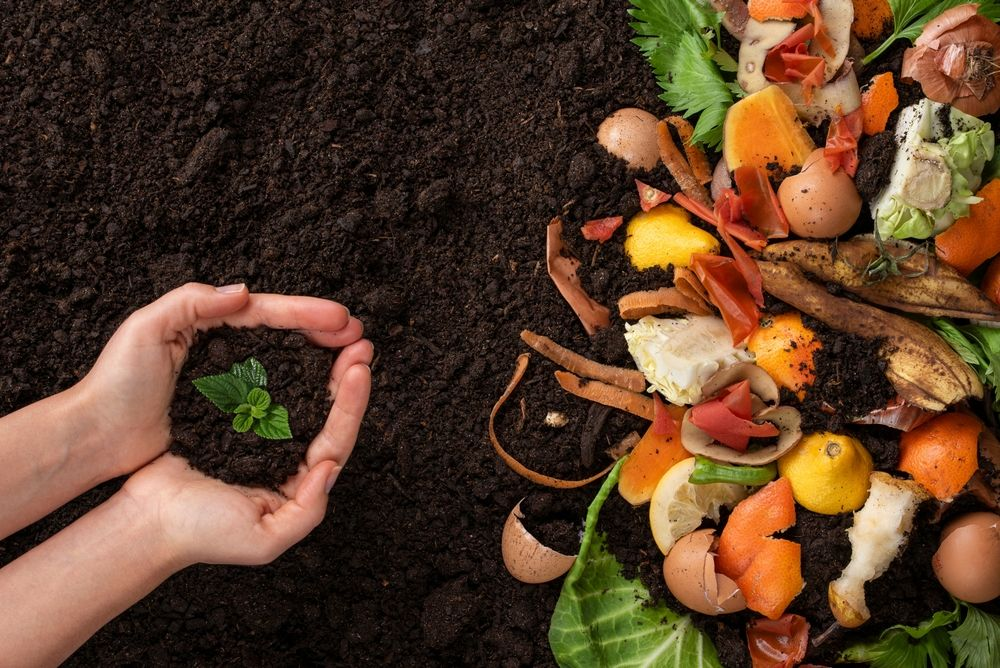
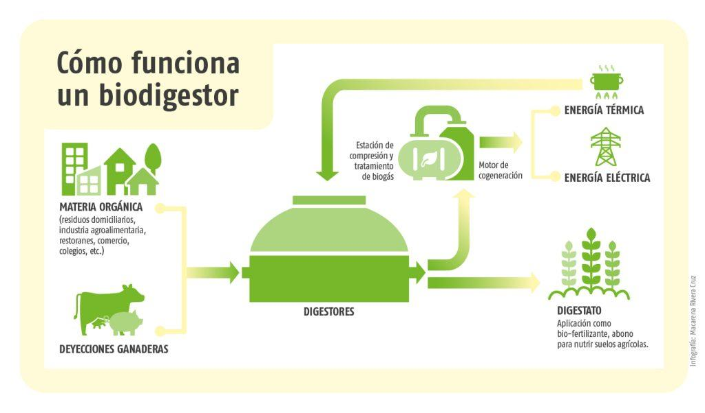

En Bio Waste, nuestra misión es transformar los residuos biológicos en recursos valiosos para generar energía limpia y productos sostenibles. Nos comprometemos a ofrecer soluciones innovadoras que contribuyan a la economía circular, ayudando a reducir el impacto ambiental y fomentando prácticas responsables en la gestión de residuos.
Ser líderes en la gestión de residuos biológicos y en la producción de biomasa, promoviendo un futuro en el que los desechos se transformen en energía renovable y productos sostenibles. Nos esforzamos por construir un mundo más limpio, donde cada empresa y comunidad participe activamente en la protección ambiental mediante una gestión responsable de los residuos.
Nuestros clientes abarcan empresas de diversas industrias que buscan soluciones para la gestión de sus desechos organicos. También impactamos positivamente a comunidades agricolas, quienes se benefician de nuestro proceso de tratamiento, así como instituciones gubernamentales que buscan cambios de sostenibilidad.
Ofrecemos a cada cliente un enfoque personalizado que promueve la reutilización de residuos, disminuye la dependencia de otros combustibles dañinos, y fomenta un futuro circular y sostenible.
Nuestros biodigestores transforman los desechos orgánicos en biogás, el cual es una fuente de energía renovable que puede ser utilizada en diferentes aplicaciones como la evaporacion de agua para generar energia. Este proceso involucra la descomposición anaeróbica de desechos organicos en un ambiente controlado, generando tanto energía como biol que pueden ser empleados como fertilizantes, promoviendo así un uso eficiente de los recursos naturales que se desperdician generalmente.
Además, nuestros sistemas de biodigestión permiten reducir significativamente los desechos, contribuyen a la reducción de la contaminación de suelos y aguas, nosotros apoyamos a nuestros clientes en la gestión de sus residuos de una manera económica y responsable.
A diferencia de otras fuentes de energía renovable, nostros no alteramos el ecosistema para nuestro beneficio, la energía que producimos mediante biodigestores tiene la ventaja de ser circular y no dependiente de factores climáticos, como el viento o el sol. Esto permite una disponibilidad constante de materia, proporcionando una buena alternativa para satisfacer las necesidades energéticas de nuestras comunidades menos favorecidas de Colombia.
Con una tecnología innovadora y sostenible como lo es la biomasa, transformamos tus desechos en nuestra energía, minimizando el impacto ambiental y fomentando el desarrollo de una economía circular.